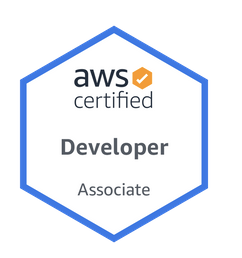
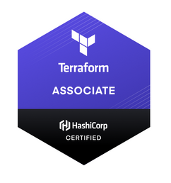
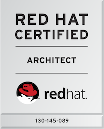

Marvin Curlee
100 Karian Court
Oxford, AL 36203
marvin.curlee@gmail.com
Open Systems, Cloud, and Devops Engineer!
Systems architect/developer with real-world experience across all major areas
of IT. Evangelist for open platforms, cloud, and DevOps processes/tools. Strong work ethic
and passion for learning and leading. Enjoy knowledge sharing and team development.
-
B.S. Finance, The University of Alabama at Birmingham
-
Red Hat Certified Architect (RHCA 130-145-089)
-
Red Hat Certified Engineer (RHCE)
-
Certified Kubernetes Administrator (CKA)
-
AWS Certified Developer Associate
-
HashiCorp Certified Terraform Associate
-
Professional Scrum Master I (PSM I)
-
Red Hat Certificate of Expertise in Clustering and Storage Management
-
Red Hat Certificate of Expertise in Ansible Automation
-
Red Hat Certificate of Expertise in Containerizing Software Application Development (Docker)
-
Red Hat Certificate of Expertise in Platform-as-a-Service (OpenShift 3)
-
Red Hat Certificate of Expertise in Configuration Management (Puppet)
-
Red Hat Certified System Administrator (RHCSA)
-
Puppet Certified Professional 2015
-
Sun Certified System Administrator for Solaris 10 (SCSA)
-
Cisco CCNA 2001-2009
-
Microsoft MCSE/MCSA


